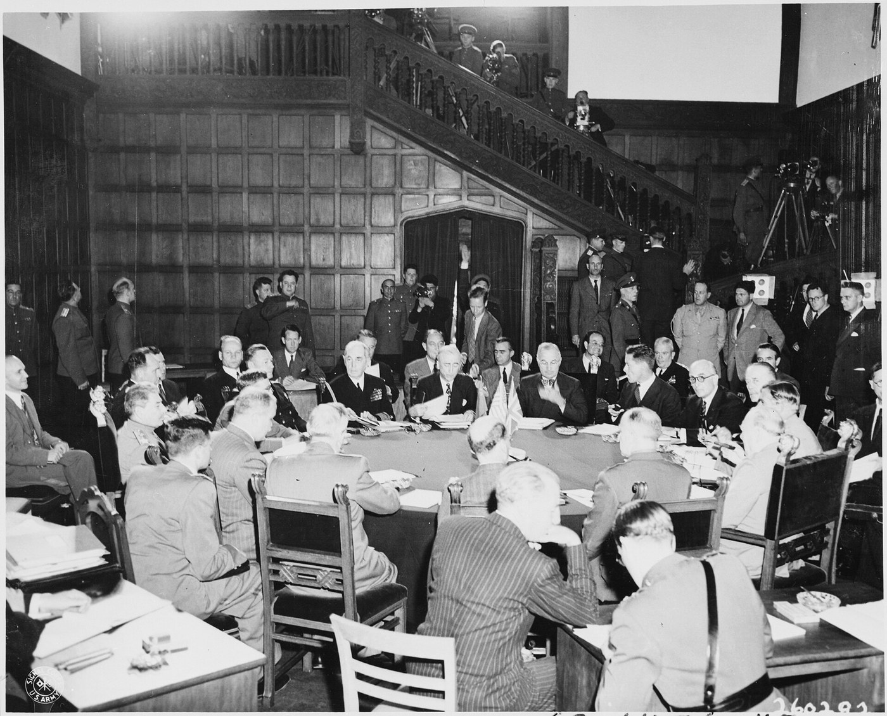

Directions: Read the full text, then answer the questions at the end.
In February 1945, with Germany near defeat, President Franklin D. Roosevelt, Prime Minister Winston Churchill, and Joseph Stalin met at Yalta, in the Soviet Crimea. They planned the settlement that would follow victory. Germany would be divided into occupation zones and disarmed. A new world organization, the United Nations, would be founded, and the great powers would hold permanent seats in its Security Council. Stalin pledged free elections in the eastern European countries his armies had liberated, and he pledged that the Soviet Union would enter the war against Japan after Germany surrendered. In return, the Soviet Union was promised territory in Asia. Much was left vague, above all Poland's government and borders, and each leader could read the agreements in his own way.
Roosevelt died on April 12, 1945, and Vice President Harry S. Truman took office with Germany weeks from surrender and the Pacific war unfinished. Germany surrendered on May 8. In July, Truman met Churchill and Stalin at Potsdam, in occupied Germany. The leaders set occupation policy, moved Germany's eastern border westward, and argued over reparations and over eastern Europe, where Soviet armies stood and Communist regimes were taking hold. Yalta was already being read in two ways. On July 26 the United States, Britain, and China issued the Potsdam Declaration. It demanded the unconditional surrender of Japan's armed forces, promised that Japan would not be destroyed as a nation, and warned that the alternative was prompt and utter destruction. Japan's leaders gave no acceptance.

Since 1942 the United States had been building a weapon in secret. The Manhattan Project worked at sites across the country, including Oak Ridge in Tennessee, Hanford in Washington, and Los Alamos in New Mexico, where the bombs were designed. More than 100,000 people worked on the project, most of them without knowing what they were making, at a cost of about two billion dollars. The weapon was an atomic bomb, whose power comes from splitting atoms, releasing energy no ordinary explosive can match. On July 16, 1945, the first bomb was tested at Alamogordo, New Mexico. The explosion, called Trinity, told Truman, then at Potsdam, that the weapon worked.
The decision to use the bomb was argued before it was made. In June 1945 a committee of Manhattan Project scientists chaired by James Franck urged that the bomb first be demonstrated on a desert or a barren island before representatives of all nations. They warned that a sudden attack on a city would bring horror across the world and start an arms race. The government's Interim Committee recommended instead that the bomb be used against Japan without a demonstration. The arguments made at the time ran on what Okinawa had shown. An invasion was expected to cost heavily, blockade and bombing had not brought surrender, and some officials hoped the shock of the weapon would break the deadlock in Tokyo. Truman accepted the recommendation.
On August 6 an American bomber, the Enola Gay, dropped an atomic bomb on Hiroshima. The city was destroyed in one blast. Tens of thousands of people died that day, and more died later of burns and radiation; the surviving records support estimates, not an exact count. On August 8 the Soviet Union declared war on Japan and invaded Manchuria. On August 9 a second bomb was dropped on Nagasaki. Even then, Japan's leaders split evenly between accepting the Potsdam terms and fighting on, and Emperor Hirohito broke the deadlock in favor of acceptance, provided the imperial institution survived. Japan communicated its acceptance on August 14. On September 2, aboard the battleship Missouri in Tokyo Bay, Japanese representatives signed the Instrument of Surrender, and the war was formally over.
The figures close the account, and each one should be read as an estimate. About 405,000 Americans died in the war, out of more than 16 million who served. Worldwide deaths are estimated between 60 and 85 million. The Soviet Union lost the most, about 27 million people, soldiers and civilians together, an estimate built from records of a war fought across its own land. China lost millions more, and Japan about three million, including the dead of Hiroshima and Nagasaki. Across Europe and Asia, millions of survivors had no homes to return to, and cities from Warsaw to Tokyo stood in ruins. American cities, by contrast, were untouched, and American factories stood intact.
More than 12 million Americans were in uniform when the war ended, and demobilization brought them home fast. The GI Bill carried the country through the change. It gave veterans unemployment pay, tuition for college and training, and government-backed loans for homes and businesses. The economy they returned to had doubled its output during the war. Women who had held war jobs were pushed toward home as veterans took the jobs, though many stayed in paid work. Black veterans came home to the segregated South many had left. The United States stood as one of two great powers. The alliance that had won the war was already divided over Europe's future, and the weapon unveiled in August 1945 made that division dangerous in a new way.
1. What did the leaders at Yalta plan for Germany and for a new world organization, and what did Stalin pledge in return for the territory he was promised?
2. What did the Potsdam Declaration demand, what did it promise Japan, and what warning did it give? How did Japan's leaders respond?
3. State the argument the Franck Report scientists made, and state the recommendation the Interim Committee made instead. Which one did Truman accept?
4. Put the events of August 6 to September 2, 1945 in order, and explain what broke the deadlock in the Japanese government.
5. Give the reckoning in figures from the reading: American deaths, estimated worldwide deaths, and estimated Soviet deaths. Then state one way the GI Bill changed what a veteran could do after the war. Answer in a short paragraph.
1. What did the leaders at Yalta plan for Germany and for a new world organization, and what did Stalin pledge? For Germany, division into occupation zones and disarmament. For the world, a new organization, the United Nations, with the great powers holding permanent seats in its Security Council. Stalin pledged free elections in the eastern European countries Soviet armies had liberated, and Soviet entry into the war against Japan after Germany surrendered. In return the Soviet Union was promised territory in Asia. Strong answers add the reading's caution: much was left vague, above all Poland's government and borders, and each leader could read the agreements in his own way.
2. What did the Potsdam Declaration demand, promise, and warn, and how did Japan respond? Issued July 26, 1945 by the United States, Britain, and China, it demanded the unconditional surrender of Japan's armed forces. It promised that Japan would not be destroyed as a nation. It warned that the alternative was prompt and utter destruction. Japan's leaders gave no acceptance, and the war went on into August.
3. State the Franck Report argument and the Interim Committee recommendation. Which did Truman accept? The Franck Report, from a committee of Manhattan Project scientists chaired by James Franck in June 1945, urged that the bomb first be demonstrated on a desert or a barren island before representatives of all nations; its authors warned that a sudden attack on a city would bring horror across the world and start an arms race. The Interim Committee recommended that the bomb be used against Japan without a demonstration. The arguments behind that recommendation ran on Okinawa: an invasion was expected to cost heavily, blockade and bombing had not brought surrender, and some officials hoped the shock would break the deadlock in Tokyo. Truman accepted the Interim Committee's recommendation.
4. Put August 6 to September 2 in order, and state what broke the deadlock. August 6: the Enola Gay dropped an atomic bomb on Hiroshima. August 8: the Soviet Union declared war on Japan and invaded Manchuria. August 9: a second bomb was dropped on Nagasaki. Japan's leaders then split evenly between accepting the Potsdam terms and fighting on, and Emperor Hirohito broke the deadlock in favor of acceptance, provided the imperial institution survived. Japan communicated its acceptance on August 14. September 2: Japanese representatives signed the Instrument of Surrender aboard the battleship Missouri in Tokyo Bay, and the war was formally over.
5. Give the reckoning in figures, and one GI Bill change. About 405,000 Americans died, out of more than 16 million who served. Worldwide deaths are estimated between 60 and 85 million. Soviet deaths are estimated at about 27 million, soldiers and civilians together, the largest share of any nation. All three figures are estimates and should be stated as estimates. The GI Bill, any one part: unemployment pay while a veteran looked for work; tuition for college and training, which sent veterans into classrooms in numbers no earlier generation had reached; or government-backed loans for homes and businesses, which let veterans buy and build on terms their wages alone could not have carried.